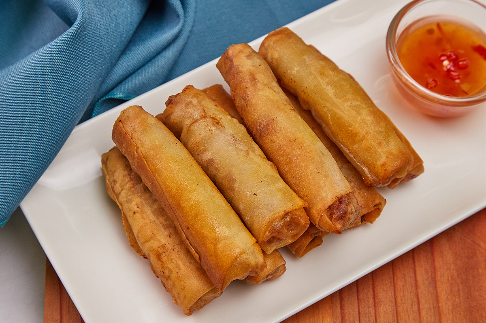

Lumpiang Shanghai
Lumpiang Shanghai

Ingredients
- 1/2 kilogram ground pork
- 1/2 cup singkamas, finely chopped
- 1/4 cup carrots, finely chopped
- 1/4 cup green onions, finely chopped
- 1/8 cup celery (equiv. to 2 Tbsp)
- 1 tbsp oyster sauce
- 1/2 tsp ground pepper
- 2 tsps sesame oil
- lumpia wrappers
- cooking oil for deep frying
Instructions
- Combine ground pork, singkamas, carrots, green onions and celery in a medium bowl. Then, add oyster sauce, salt and pepper, sesame oil and 3 Tbsp of Lady’s Choice Mayonnaise; mix well.
- Spoon about 1 tablespoon of the mixture into each lumpia wrapper. Roll tightly. Seal ends of the wrapper with water.
- Deep fry until golden brown. Serve hot.